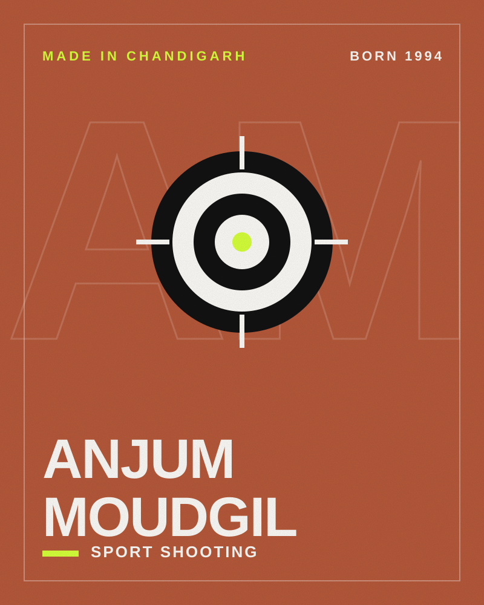
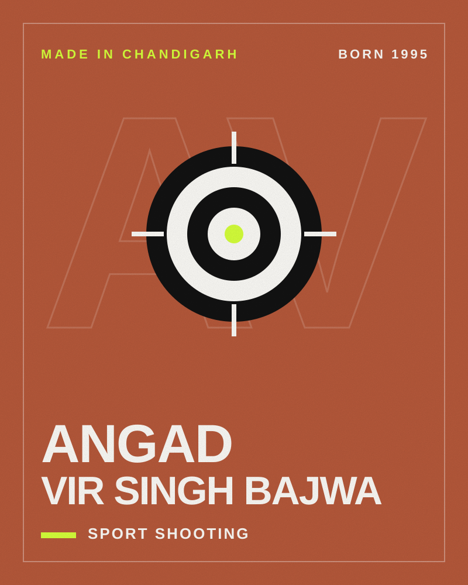
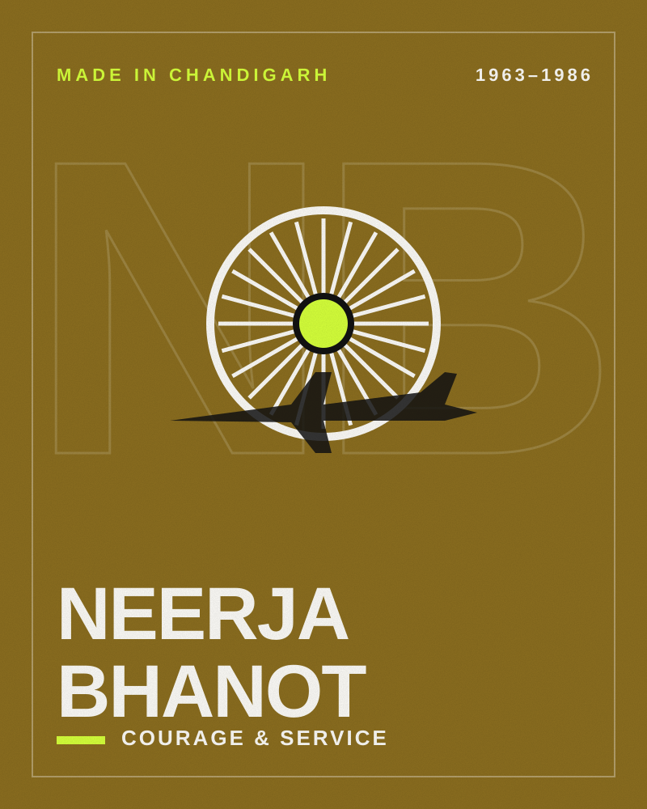

Sport Shooting · Made in Chandigarh
AnjumMoudgil
Sport shooter (rifle)
- Born
- BirthplaceChandigarh, India

- No. 2world ranking, 10m air rifle (2019)
- 589CWG qualifying record score
- 248.4World Championship final score
Anjum Moudgil is a rifle shooter who won silver in the 10m air rifle at the ISSF World Championship in Changwon and silver in the 50m rifle three positions at the 2018 Commonwealth Games, where she set a Games qualifying record.
Started at school in Chandigarh
Anjum took up shooting at Sacred Heart Senior Secondary School in Chandigarh and completed her graduation and post-graduation at DAV College, followed by a master’s in sports psychology. She is also an abstract artist and a sub-inspector with Punjab Police.
On the world stage
She won silver at the 2018 ISSF World Cup in Mexico and at the World Championship in Changwon, gold at the South Asian Games, and silver at the 2018 Commonwealth Games. In May 2019 she reached world No. 2 in the women’s 10m air rifle rankings.
Timeline
- 1994Born in Chandigarh on 5 January
- 2016South Asian Games gold
- 2018Commonwealth Games silver; World Cup silver; World Championship silver
- 2019World No. 2 in 10m air rifle; Arjuna Award
Honours
- Arjuna Award (2019)
Quick questions
Where was Anjum Moudgil born?
Anjum Moudgil was born in Chandigarh, India. Born in Chandigarh; took up shooting at Sacred Heart Senior Secondary School and studied at DAV College, Chandigarh.
When was Anjum Moudgil born?
Anjum Moudgil was born on 5 January 1994.
What is Anjum Moudgil known for?
Anjum Moudgil is known for 10m air rifle, 50m rifle three positions and Commonwealth Games.
What awards has Anjum Moudgil received?
Honours include Arjuna Award (2019).
More from Chandigarh

Sport Shooting · Born 1995
Angad Vir Singh Bajwa
Skeet shooter and world-record holder

Courage & Service · 1963–1986
Neerja Bhanot
Flight purser and Ashoka Chakra recipient

Cricket · Born 1959
Kapil Dev
Cricketer and 1983 World Cup–winning captain
Film & Television · Born 1975
Mahie Gill
Actor (Hindi and Punjabi cinema)
This is an independent editorial profile compiled from public sources. Chandigarhcitylyf is not affiliated with Anjum Moudgil, and nothing on this page implies endorsement.